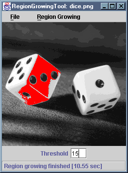

The RegionGrowingTool application displays an image read
from a file and allows the user to mark seed pixels. Regions can then be
grown from these seeds. The growing regions are overlaid on the image,
allowing progress to be monitored easily.
Once regions have been grown, they can be saved to a file as an image. The user also has the option of starting again from the same seeds (possibly adding more to the image) or of starting again with a new set of seeds. This is useful when experimenting with different connectivities or thresholds. Menu options permit switching between 4- and 8-connectivity, and a threshold can be specified in the text field beneath the image.
The file RegionGrowingTool.java compiles to produce
RegionGrowingTool.class RegionGrowingTool$1.class RegionGrowingTool$Threshold.class RegionGrowingTool$View.class
These .class files have been packaged as a single JAR file,
RegionGrowingTool.jar. You can install the application by
copying this JAR file, along with either the MS-DOS batch file
RegionGrowingTool.bat or the bash shell script
RegionGrowingTool.sh, as appropriate. The batch file or
script should be edited to reflect the new location of the JAR file.